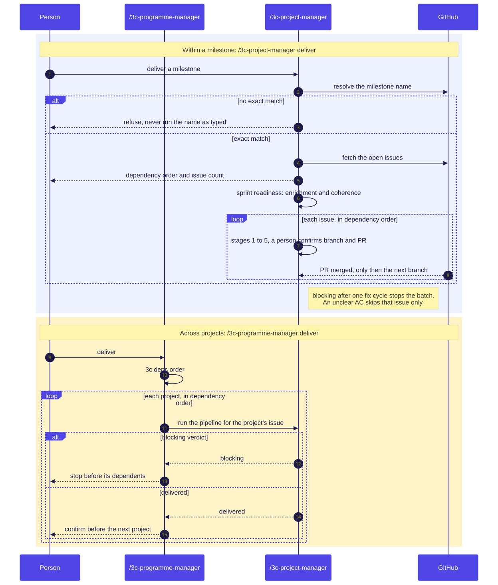

03 · Quality gates
C / 5
Gates over guidelines.
Each gate, grouped by when it fires, and marked for who enforces it: a hook, the CLI, or a rule the skill follows.
![Diagram C: while editing, the path guard hook blocks and the post-edit boundary check hook advises. While writing, the skill redacts secrets from the plan, the CLI refuses a test file, PR body or handover that carries one, and the skill writes a failing test before the code. At commit, the commit gate hook blocks by default; 3c bypass skips one commit with a reason and is logged. Before the PR, the skill stops on critical or major /3c-review findings, a failing verify gate, and a blocking review board after one fix cycle. At ship, a person confirms the branch and the PR.](diagrams/c-quality-gates.svg)
Five diagrams of the workflow behind 3C (Claude Code Coach): which skill dispatches which agent, the path every issue takes, the gates it passes, the context each step reads, and how work stays on one branch at a time.
.claude/ and run in Claude Code.Who calls whom. A person invokes a skill; the skills orchestrate in your session; the agents are dispatched one level deep, read the change, and report.

One issue through /3c-project-manager, as a state machine: from the scope pre-check to the handover issue.

Each gate, grouped by when it fires, and marked for who enforces it: a hook, the CLI, or a rule the skill follows.
What each context file holds, and the step that reads it.

Serialisation at two levels: issues within a milestone, and projects across a workspace.

Skills orchestrate. Agents read and report. Every gate names who enforces it. A person confirms the branch and the PR.
The retrospective is optional and never a gate. It records what worked, what didn't, and the action items to take next.